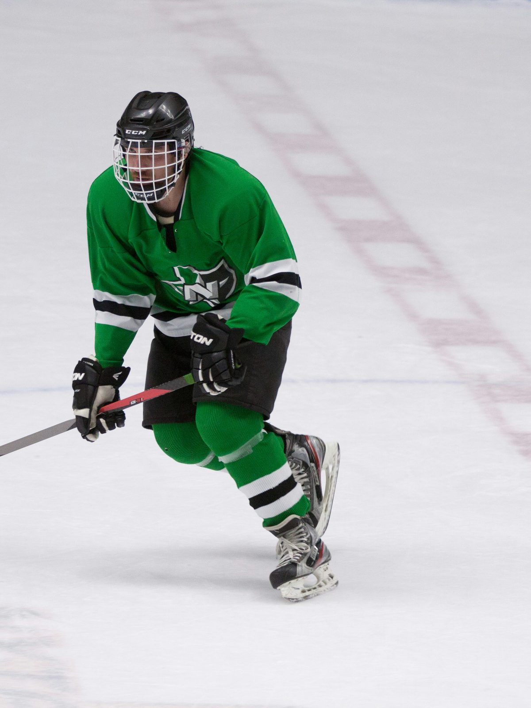
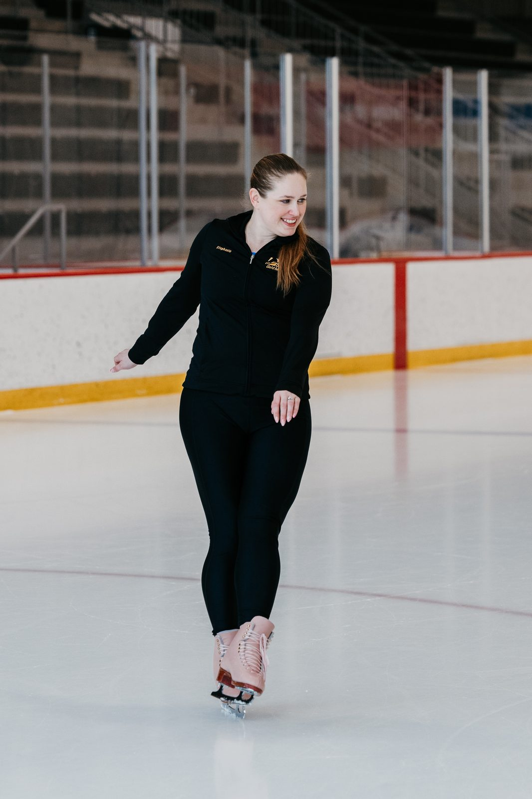
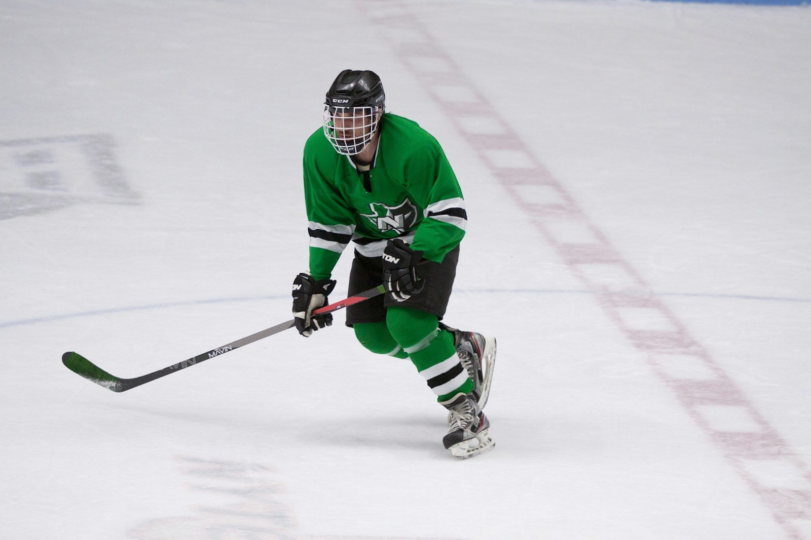
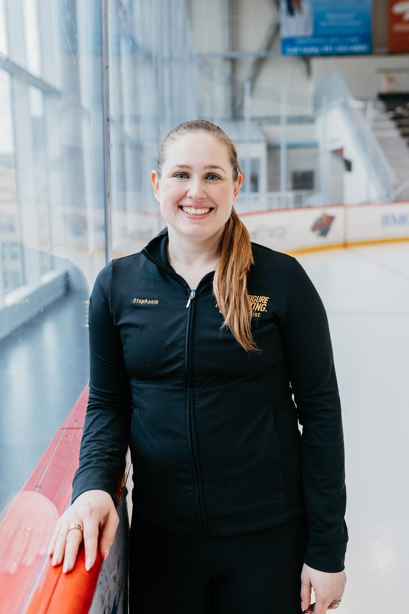

The Edge Protocol — Twin Cities, MN
The Edge Protocol is the individualized power skating program built to get serious hockey players into NCAA, junior, and NHL organizations — by fixing the one skill scouts rank above everything else.
Apply for The Edge Protocol →Who This Program Serves
The families who come to The Edge Protocol are not looking for improvement. They are looking for results — a college offer, a junior contract, a professional tryout. Their player is already competing at a high level. The gap is skating. And the gap is closable.
In 90 days of individualized edge-work, players see measurable improvement in crossover efficiency, zone-entry speed, and edge-to-edge transition — the specific mechanics that differentiate players at every major scouting evaluation from AAA through pro.
Apply Now →The Scouting Reality
Every NHL scout, every NCAA coach, and every Tier 1 junior evaluator applies the same first filter: skating. Not compete level. Not hockey sense. Skating — because it is the one physical attribute that immediately signals whether a player can survive at the next level.
The gap between where most serious players are and where they need to be is not about effort or training volume. It is about edge mechanics — the specific blade angles, weight transfers, and transition patterns that scouts notice within the first two minutes of watching a player skate.
Fixing that requires working one player at a time, with a coach who evaluates edge mechanics the way scouts do.
"Edge work is measurable. The difference is visible."

The Methodology

The most effective skating coaches at the professional level share one foundation: figure skating methodology. They built their edge mechanics — blade engagement, hip position, weight transfer, and rocker transitions — before speed or power. The result is the effortless transition and precise edge control that scouts identify immediately, and that separates the players who make it from the ones who plateau.
The Edge Protocol applies this methodology to hockey players one at a time. Every program is built from an individual edge assessment, identifying the specific deficiencies in that player's skating and building a progression around those deficiencies — not a standard drill package.
The Program
Full edge mechanics evaluation. Every deficiency mapped before session one.
1-on-1 on-ice sessions. Position-specific, video-documented, built around your player's deficiencies.
Measurable outcomes. Documented improvements. Specific mechanics visible to scouts and evaluators.
The Programs
Starting Point
90-minute on-ice assessment + written Performance Report + Zoom debrief. Find out exactly what to fix before choosing a program.
Learn More →30-Day Program
6 private sessions over 4 weeks with before/after video analysis. Real, measurable improvement — on video.
Learn More →Flagship Program
The complete edge transformation. Full 90-day private program with assessment, video documentation, and direct access to Stephanie. For players targeting NCAA, AHL, or NHL.
Learn More →Who This Is For
The Edge Protocol is built for players at the level where skating is the deciding factor:
We work with a limited number of players per cohort to protect the coaching quality that makes the program work. Applications are reviewed before a spot is offered.

The Coach

The Edge Protocol is run by a 3-time U.S. National Champion figure skater who competed at the ISU World Championships and has served as a USFS Competition Judge since 2018 — evaluating edge mechanics at the national level as part of her professional role. Twenty years coaching experience. Active contract at the St. Paul Figure Skating Club.
This is not a resume. This is a methodology. The credential matters because it means your player's skating is being evaluated by someone who assesses edge mechanics the same way professional scouts do — and builds programs around what she actually sees.
We work with a small number of players per cycle to protect the quality of coaching attention each player receives. When the cohort fills, a waitlist opens.
Apply for The Edge Protocol →Application takes 5 minutes. No commitment required to apply.
We review your application within 48 hours.
If your player looks like a fit, we schedule a 20-minute call to understand their current level and skating challenges.
If we move forward, we schedule the initial edge assessment and build the program around your player.